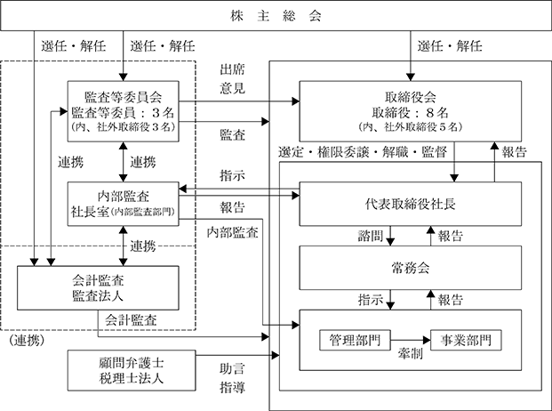

(注) 「提出日現在発行数」欄には、2024年４月１日からこの有価証券報告書提出日までの新株予約権の行使により発行された株式数は含まれておりません。
該当事項はありません。
該当事項はありません。
③ 【その他の新株予約権等の状況】
※ 当事業年度の末日(2024年１月31日)における内容を記載しております。提出日の前月末現在(2024年３月31日)において、記載すべき内容が当事業年度の末日における内容から変更がないため、提出日の前月末現在に係る記載を省略しております。
（注）１．当該新株予約権は行使価額修正条項付新株予約権であります。
２．当該行使価額修正条項付新株予約権の特質
1．本新株予約権の目的となる株式の種類及び数
本新株予約権の目的となる株式の種類及び総数は、当社普通株式(別記「新株予約権の目的となる株式の種類」欄参照。)510,000株(本新株予約権１個当たりの目的である株式の数(別記「新株予約権の目的となる株式の数」欄第１項参照。)は100株)で確定しており、株価の上昇又は下落により行使価額(別記「新株予約権の行使時の払込金額」欄第2項において定義する。)が修正されても変化しない(但し、別記「新株予約権の目的となる株式の数」欄に記載のとおり、調整されることがある。)。なお、株価の上昇又は下落により行使価額が修正された場合、本新株予約権による資金調達の額は増加又は減少する。
2．行使価額の修正
本新株予約権の行使価額は、当初固定とし、発行日から４か年経過満了日に、行使価額は本新株予約権の発行要項に基づき修正されることとなり、修正がなされた日以降別記「新株予約権の行使期間」欄に定める期間の満了日まで、別記「新株予約権の行使時の払込金額」欄第3項第(2)号を条件に、行使価額は、各修正日(以下に定義する。)の前取引日の株式会社東京証券取引所(以下「東京証券取引所」という。)における当社普通株式の普通取引の終値(以下「終値」という。)(同日に終値がない場合には、その直前の終値)の93％に相当する金額(円位未満小数第３位まで算出し、小数第３位の端数を切り上げた金額)に修正される。
「取引日」とは、東京証券取引所において売買立会が行われる日をいう。但し、東京証券取引所において当社普通株式に関して何らかの種類の取引停止処分又は取引制限(一時的な取引制限も含む。)があった場合には、当該日は「取引日」にあたらないものとする。
本「行使価額修正条項付第10回新株予約権」において、「修正日」とは、各行使価額の修正につき、欄外注記第6項第(1)号に定める本新株予約権の各行使請求に係る通知を当社が受領した日をいう。
3．行使価額の修正頻度
行使の際に本欄第2項に記載の条件に該当する都度、各修正日の前取引日において、修正される。
4．行使価額の上限
行使価額は2,801円(但し、別記「新株予約権の行使時の払込金額」欄第4項の規定に準じて調整を受ける。)(以下、本「行使価額修正条項付第10回新株予約権」において「上限行使価額」という。)を上回らないものとする。本欄第2項に基づく計算によると修正後の行使価額が上限行使価額を上回ることとなる場合、行使価額は上限行使価額とする。
5．行使価額の下限
行使価額は発行日から４か年経過満了日に東京証券取引所における当社普通株式の普通取引の終値(同日に終値がない場合には、その直前の終値)(円位未満小数第３位まで算出し、小数第３位の端数を切り上げた金額)の65％(但し、別記「新株予約権の行使時の払込金額」欄第4項の規定に準じて調整を受ける。)(以下、本「行使価額修正条項付第10回新株予約権」において「下限行使価額」という。)を下回らないものとする。本欄第2項に基づく計算によると修正後の行使価額が下限行使価額を下回ることとなる場合、行使価額は下限行使価額とする。
6．割当株式数の上限
510,000株
但し、別記「新株予約権の目的となる株式の数」欄に記載のとおり、調整される場合がある。
7．本新株予約権が全て行使された場合の資金調達額の下限(本欄第5項に記載の行使価額の下限にて本新株予約権が全て行使された場合の資金調達額)
1,019,898,000円(但し、本新株予約権は下限行使価額が未定のため当初行使価額で計算。また、本新株予約権は行使されない可能性がある。)
8．当社の請求による本新株予約権の取得
本新株予約権には、当社の決定により、本新株予約権の全部又は一部を取得することを可能とする条項が設けられている。
３．新株予約権の目的となる株式の数
1．本新株予約権の目的となる株式の種類及び総数は、当社普通株式510,000株(本新株予約権１個当たりの目的である株式の数(以下、本「行使価額修正条項付第10回新株予約権」において「割当株式数」という。)は100株)とする。但し、本欄第2項乃至第5項により割当株式数が調整される場合には、本新株予約権の目的である株式の総数は調整後割当株式数に応じて調整される。
2．当社が当社普通株式の分割、無償割当て又は併合(以下「株式分割等」と総称する。)を行う場合には、割当株式数は次の算式により調整される。但し、調整の結果生じる１株未満の端数は切り捨てる。
調整後割当株式数＝調整前割当株式数×株式分割等の比率
3．当社が別記「新株予約権の行使時の払込金額」欄第4項の規定に従って行使価額の調整を行う場合(但し、株式分割等を原因とする場合を除く。)には、割当株式数は次の算式により調整される。但し、調整の結果生じる１株未満の端数は切り捨てる。なお、かかる算式における調整前行使価額及び調整後行使価額は、別記「新株予約権の行使時の払込金額」欄第4項に定める調整前行使価額及び調整後行使価額とする。
4．本項に基づく調整において、調整後割当株式数の適用開始日は、当該調整事由に係る別記「新株予約権の行使時の払込金額」欄第4項第(2)号及び第(5)号による行使価額の調整に関し、各号に定める調整後行使価額を適用する日と同日とする。
5．割当株式数の調整を行うときは、当社は、調整後割当株式数の適用開始日の前日までに、本新株予約権者に対し、かかる調整を行う旨及びその事由、調整前割当株式数、調整後割当株式数並びにその適用開始日、その他必要な事項を書面で通知する。但し、別記「新株予約権の行使時の払込金額」欄第4項第(2)号⑤に定める場合、その他適用開始日の前日までに上記通知を行うことができない場合には、適用開始日以降速やかにこれを行う。
４．新株予約権の行使時の払込金額
1．本新株予約権の行使に際して出資される財産の価額
各本新株予約権の行使に際して出資される財産は金銭とし、その価額は、行使価額に割当株式数を乗じた額とする。
2．本新株予約権の行使に際して出資される当社普通株式１株当たりの金銭の額(以下、本「行使価額修正条項付第10回新株予約権」において「行使価額」という。)は、当初1,985円(以下、本「行使価額修正条項付第10回新株予約権」において「当初行使価額」という。)とする。但し、行使価額は本欄第3項に定める修正及び第4項に定める調整を受ける。
3．行使価額の修正
(1) 本新株予約権の行使価額は、当初固定とし、発行日から４か年経過満了日に、行使価額は本新株予約権の発行要項に基づき修正されることとなり、修正がなされた日以降別記「新株予約権の行使期間」欄に定める期間の満了日まで、各修正日の前取引日の東京証券取引所における当社普通株式の普通取引の終値(同日に終値がない場合には、その直前の終値)の93％に相当する金額(円位未満小数第3位まで算出し、小数第3位の端数を切り上げた金額)に修正される。
(2) 行使価額は上限行使価額を上回らないものとする。本項第(1)号に基づく計算によると修正後の行使価額が上限行使価額を上回ることとなる場合、行使価額は上限行使価額とする。
(3) 行使価額は下限行使価額を下回らないものとする。本項第(1)号に基づく計算によると修正後の行使価額が下限行使価額を下回ることとなる場合、行使価額は下限行使価額とする。
4．行使価額の調整
(1) 当社は、本新株予約権の発行後、下記第(2)号に掲げる各事由により当社の発行済普通株式の総数に変更が生じる場合又は変更が生じる可能性がある場合には、類似する別途の調整方法に従うとの本新株予約権者と別途の合意がない限り、次に定める算式(以下、本「行使価額修正条項付第10回新株予約権」において「行使価額調整式」という。)をもって行使価額を調整する。
(2) 行使価額調整式により行使価額の調整を行う場合及び調整後行使価額の適用時期については、次に定めるところによる。
① 本項第(4)号②に定める時価を下回る払込金額をもって当社普通株式を新たに発行し、又は当社の保有する当社普通株式を処分する場合(無償割当てによる場合を含む。)(但し、当社の役員及び従業員並びに当社子会社の役員及び従業員を対象とする譲渡制限付株式報酬として株式を発行又は処分する場合、新株予約権(新株予約権付社債に付されたものを含む。)の行使、取得請求権付株式又は取得条項付株式の取得、その他当社普通株式の交付を請求できる権利の行使によって当社普通株式を交付する場合、及び会社分割、株式交換又は合併により当社普通株式を交付する場合を除く。)調整後行使価額は、払込期日(募集に際して払込期間を定めた場合はその最終日とし、無償割当ての場合はその効力発生日とする。)以降、又はかかる発行若しくは処分につき株主に割当てを受ける権利を与えるための基準日がある場合はその日の翌日以降これを適用する。
② 株式の分割により普通株式を発行する場合
調整後行使価額は、株式の分割のための基準日の翌日以降これを適用する。なお、行使価額調整式で使用する新発行・処分株式数は、株式の分割により増加する当社の普通株式数をいうものとする。
③ 本項第(4)号②に定める時価を下回る払込金額をもって当社普通株式を交付する定めのある取得請求権付株式又は本項第(4)号②に定める時価を下回る払込金額をもって当社普通株式の交付を請求できる新株予約権(新株予約権付社債に付されたものを含む。)を発行又は付与する場合(但し、当社の役員及び従業員並びに当社子会社の役員及び従業員を対象とするストック・オプションを発行する場合を除く。)調整後行使価額は、取得請求権付株式の全部に係る取得請求権又は新株予約権の全部が当初の条件で行使されたものとみなして行使価額調整式を適用して算出するものとし、払込期日(新株予約権の場合は割当日)以降又は(無償割当ての場合は)効力発生日以降これを適用する。但し、株主に割当てを受ける権利を与えるための基準日がある場合には、その日の翌日以降これを適用する。
④ 当社の発行した取得条項付株式又は取得条項付新株予約権(新株予約権付社債に付されたものを含む。)の取得と引換えに本項第(4)号②に定める時価を下回る価額をもって当社普通株式を交付する場合、調整後行使価額は、取得日の翌日以降これを適用する。
上記にかかわらず、当該取得条項付株式又は取得条項付新株予約権(新株予約権付社債に付されたものを含む。)に関して、当該調整前に本号③による行使価額の調整が行われている場合には、調整後行使価額は、当該調整を考慮して算出するものとする。
⑤ 本号①乃至③の場合において、基準日が設定され、かつ、効力の発生が当該基準日以降の株主総会、取締役会その他当社の機関の承認を条件としているときには、本号①乃至③にかかわらず、調整後行使価額は、当該承認があった日の翌日以降これを適用する。この場合において、当該基準日の翌日から当該承認があった日までに本新株予約権の行使請求をした本新株予約権者に対しては、次の算出方法により、当社普通株式を追加的に交付する。
この場合、１株未満の端数を生じたときはこれを切り捨てるものとする。
(3) 行使価額調整式により算出された調整後行使価額と調整前行使価額との差額が１円未満にとどまる場合は、行使価額の調整は行わない。但し、その後行使価額の調整を必要とする事由が発生し、行使価額を調整する場合には、行使価額調整式中の調整前行使価額に代えて調整前行使価額からこの差額を差し引いた額を使用する。
(4)① 行使価額調整式の計算については、円位未満小数第２位まで算出し、小数第２位を四捨五入する。
② 行使価額調整式で使用する時価は、調整後行使価額が初めて適用される日(但し、本項第(2)号⑤の場合は基準日)に先立つ45取引日目に始まる30連続取引日の東京証券取引所における当社普通株式の普通取引の終値の平均値(終値のない日数を除く。)とする。この場合、平均値の計算は、円位未満小数第２位まで算出し、小数第２位を四捨五入する。
③ 行使価額調整式で使用する既発行株式数は、株主に割当てを受ける権利を与えるための基準日がある場合はその日、また、かかる基準日がない場合は、調整後行使価額を初めて適用する日の１ヶ月前の日における当社の発行済普通株式の総数から、当該日において当社の保有する当社普通株式を控除した数とする。また、上記第(2)号②の場合には、行使価額調整式で使用する新発行・処分株式数は、基準日において当社が有する当社普通株式に割り当てられる当社の普通株式数を含まないものとする。
(5) 上記第(2)号の行使価額の調整を必要とする場合以外にも、次に掲げる場合には、当社は、本新株予約権者と協議のうえ、その承認を得て、必要な行使価額の調整を行う。
① 株式の併合、会社分割、株式交換又は合併のために行使価額の調整を必要とするとき。
② その他当社の普通株式数の変更又は変更の可能性が生じる事由の発生により行使価額の調整を必要とするとき。
③ 行使価額を調整すべき複数の事由が相接して発生し、一方の事由に基づく調整後の行使価額の算出にあたり使用すべき時価につき、他方の事由による影響を考慮する必要があるとき。
(6) 行使価額の調整を行うとき(上限行使価額、下限行使価額が調整されるときを含む。)は、当社は、調整後行使価額の適用開始日の前日までに、本新株予約権者に対し、かかる調整を行う旨及びその事由、調整前行使価額、調整後行使価額(調整後の上限行使価額、下限行使価額を含む。)並びにその適用開始日、その他必要な事項を書面で通知する。但し、上記第(2)号⑤に定める場合、その他適用開始日の前日までに上記通知を行うことができない場合には、適用開始日以降速やかにこれを行う。
５．新株予約権の行使により株式を発行する場合の株式の発行価格及び資本組入額
1．新株予約権の行使により株式を発行する場合の株式１株の発行価格
本新株予約権の行使により交付する当社普通株式１株の発行価格は、行使請求に係る各本新株予約権の行使に際して払い込むべき金額の総額に、行使請求に係る各本新株予約権の発行価額の総額を加えた額を、別記「新株予約権の目的となる株式の数」欄記載の本新株予約権の目的である株式の総数で除した額とする。
2．新株予約権の行使により株式を発行する場合における増加する資本金及び資本準備金
本新株予約権の行使により株式を発行する場合の増加する資本金の額は、会社計算規則第17条の定めるところに従って算定された資本金等増加限度額に0.5を乗じた金額とし、計算の結果１円未満の端数を生じる場合はその端数を切り上げた額とする。増加する資本準備金の額は、資本金等増加限度額より増加する資本金の額を減じた額とする。
(注) 新株予約権の行使による増加であります。
(注) 自己株式129,035株は「個人その他」に1,290単元、「単元未満株式の状況」に35株含まれております。
2024年１月31日現在
該当事項はありません。
該当事項はありません。
該当事項はありません。
該当事項はありません。
(注) １ 当期間における処理自己株式には、2024年４月１日からこの有価証券報告書提出日までの単元未満株式の売渡による株式は含まれておりません。
２ 当期間における保有自己株式数には、2024年４月１日からこの有価証券報告書提出日までの単元未満株式の買取り及び売渡による株式は含まれておりません。
当社は、株主に対する利益還元を経営の重要な課題の一つと位置付けております。当社は、将来に向けての事業展開に伴う設備等の成長投資を推進し事業基盤を強化するとともに、企業価値向上のために必要な内部留保を確保しつつ、財政状態、経営成績、その他経営全般を総合的に判断したうえ、毎事業年度において中間配当と期末配当の年２回の剰余金の配当を継続的に実施することを基本方針としております。なお、当社は毎年７月31日および1月31日を基準日として、会社法第459条第１項の規定に基づき、剰余金の配当等を取締役会決議により行うことを可能とする旨、定款に定めております。
上記を踏まえまして、利益配分につきましては、中間配当を含めた配当金の総額を配当性向40％を目安とし、安定的な配当を継続して行えるよう業績の向上に努める所存であります。
当事業年度においては、１株当たり20円の配当(うち中間配当10円)を実施することを決定しました。
なお、当事業年度に係る剰余金の配当は以下のとおりであります。
当社では、健全な経営の推進と社会的信頼に十分に応えるべく、コーポレート・ガバナンスを最も重要な経営課題として位置付け、経営の健全性・透明性および公平性を高めることに重点を置き、法令遵守を社内に徹底させることは当然のこととし、役員全員が常に「法令違反は即経営責任に直結する」との危機感を持ち経営に臨んでおります。具体的には、経営の意思決定、職務執行および監督ならびに内部統制等について、適切な体制を整備・構築することにより、法令・規程・社内ルールに則った業務執行を組織全体に周知徹底しております。
また、株主重視の経営に徹するべく、「適正な株価形成」・「株価の持続的上昇」のための経営改革を実現し、経営のチェック機能を強化することでグローバルに通用するコーポレート・ガバナンスを確立することも重要であると考えております。その結果が、社会からの信頼の獲得に繋がることとなり、自ずと企業価値も高まり、株主の皆様にも満足して頂けるものと考えております。
コーポレート・ガバナンス体制の主たる機関として取締役会、会計監査人、常務会、内部監査を設置しております。なお、経営環境の変化に機動的に対応できる経営体制を確立するため、取締役の任期を１年としております。また、経営の健全性と透明性をさらに向上させることを目的として、2023年４月27日開催の定時株主総会をもって、監査等委員会設置会社に移行しています。
(取締役会)
当社の取締役会は、監査等委員である取締役３名を含む８名で構成されており、監査等委員である取締役は全員が社外取締役です。
取締役会は、取締役会規程に基づき、経営方針その他の経営に関する重要事項を決定するとともに、取締役の職務の執行を監督しております。原則として毎月１回の定時取締役会を開催し、必要に応じて臨時取締役会を開催しております。取締役会は、法令及び定款に則り、取締役の業務監督機関及び経営上の重要事項の意思決定機関として機能しています。
構成員は次のとおりであります。
代表取締役会長 吉野 佳秀
代表取締役社長 本田 豊(議長)
取締役 長 泰治
取締役 鈴木 孝雄(社外取締役)
取締役 若松 俊樹(社外取締役)
取締役監査等委員 込山 雅弘(社外取締役)
取締役監査等委員 村松 高男(社外取締役)
取締役監査等委員 福島 保(社外取締役)
(指名・報酬委員会)
当社の指名・報酬委員会は、３名で構成されており、内２名は社外取締役であります。取締役会の諮問機関である本委員会を設置することにより、当社の取締役等の指名や報酬に関する決定プロセスの公正性・透明性・客観性を確保し、コーポレート・ガバナンス体制の一層の充実・強化を図ることを目的としております。本委員会は取締役会の諮問機関として、取締役等の指名・報酬に関する事項について審議し、その内容に基づき取締役会へ答申を行うことといたします。
構成員は次のとおりであります。
代表取締役会長 吉野 佳秀
取締役 鈴木 孝雄(議長：社外取締役)
取締役 若松 俊樹(社外取締役)
(監査等委員会)
当社の監査等委員会は、監査等委員である取締役３名によって構成され、その全員が社外取締役です。監査等委員である取締役には企業経営について独立した観点を有する者も含まれており、各々の職業倫理の観点で経営監視が行われる体制を整備しています。監査等委員である取締役は、取締役会その他において、取締役の職務執行について適宜意見を述べています。
監査等委員会は、ガバナンスのあり方とその運営状況を監視し、取締役の職務の執行を含む日常的活動の監査・監督を行うため、監査計画に基づき監査を実施し、監査等委員会を毎月１回開催するほか、内部監査室及び会計監査人との会合も設け、監査に必要な情報の共有化を図っています。
構成員は次のとおりであります。
取締役監査等委員 込山 雅弘(議長：社外取締役)
取締役監査等委員 村松 高男(社外取締役)
取締役監査等委員 福島 保(社外取締役)
(常務会)
当社は、社内の重要事項の審議機関として、常勤取締役を中心に構成される会議体として「常務会」を設置しております。当該会議体は、毎週１回開催しており、内部統制上の重要な審議機関でもあるため、内部監査部門である社長室が会議に出席し、職務執行状況を把握しております。また、常務会では「リスク管理規程」に基づき毎年１回、各担当部署長から各部署におけるリスクを列挙させ、当該リスクに対する分類・分析・評価・対応等を協議するとともに、それらに対する対応後の進捗・結果報告も随時行うこととなっております。
(内部監査)
当社は、規模の小さい組織ではありますが、内部統制の有効性および業務執行状況について、社長直轄の社長室１名を設置し、会計監査、業務監査を着実に実施しております。また、社長室に関する内部監査につきましては、企画部による相互監査を実施しております。
当社のコーポレートガバナンス体制を図式化すると次のとおりであります。

当社は、監査等委員会設置会社を採用しております。この体制により、経営の意思決定機関である取締役会に業務執行の権限・責任を集中させ、業務執行および取締役会から独立した監査等委員会に監査機能を担わせることで、適切な経営の意思決定と業務執行を実現できると考えております。上記の体制により、当社取締役会の監督機能の向上を図り、経営の効率性を高める当社グループのさらなる企業価値の向上を目指しております。
③ 企業統治に関するその他の事項
当社における内部統制システムは、財務報告を適正に行う、業務を効率よく行う、資産を保全する、正確な情報を適時に収集して公開する、役員や従業員の不正行為を防止する等を目的に仕組みの構築がなされております。なお、これらについては、取締役会において「内部統制システム構築の基本方針」を決議しております。
当社におけるリスク管理は、リスク(経営目標を阻害する恐れのある不確実性を伴う事象や行為)を認識・理解し、コントロールするように全役職員が行動する企業風土の構築および体制の確立が基盤となっております。企業価値の最大化の観点からは、あらゆる事業リスクを的確に把握し、積極的に経営戦略の中に取組んでいく必要があるという認識に立ち、社長をはじめとする全役職員が、経営に関わる法令遵守や個人情報保護等の重要事項について「常務会」において審議・決定し、情報の共有化と経営体制の強化に繋げております。中でも重要な事項については、取締役会でリスク管理報告として報告しており、リスク管理が円滑、かつ有効に機能するように継続的に監視・監督しております。また、各部署においては各部署長が、自己の業務分掌範囲について責任を持ち、法令・規程・社内ルールに基づいてリスクを回避する手段を講じており、顕在化した場合に迅速な対応がとれる体制を確立しております。さらに、従業員に対しても、企画部が、取引先情報をはじめとする情報管理体制や内部者取引規制等のコンプライアンス教育等を随時実施し、意識の向上と周知徹底を図っております。なお、当社では、法律事務所と顧問契約を締結しており、状況に応じて顧問弁護士に調査を依頼し、専門的見地からの助言を受けることができるように、法的リスクを回避できる体制を敷いております。
当社から取締役または監査役を１名以上派遣し、子会社の取締役の職務執行の監視・監督を行います。子会社の事業運営については、「関係会社管理規程」に基づき管理するものとし、子会社の経営については、その自主性を尊重しつつ、当社への事業の状況に関する定期的な報告と、重要事項については適切な承認を得るものとします。子会社に対する監査は、当社の「内部監査規程」に基づき社長室が随時実施します。
当社は財務及び事業の方針の決定を支配する者の在り方に関する基本方針については、定めておりません。
当社と社外取締役は、会社法第427条第１項の規定に基づき、同法第423条第１項の損害賠償責任を限定する契約を締結しております。当該契約に基づく損害賠償責任の限度額は、法令が規定する額としております。
当社は会社法第430条の３第１項に規定する役員等賠償責任保険契約を保険会社との間で締結し、被保険者が会社の役員としての業務につき行った行為（不作為を含む。）に起因して損害賠償請求がなされたことにより、被保険者が被る損害賠償金や争訟費用等を当該保険契約により填補することとしております。保険料は全額当社が負担しております。なお、贈収賄などの犯罪行為や意図的に違法行為を行った役員自身の損害等は補償対象外とすることにより、役員等の職務の執行の適正性が損なわれないように措置を講じております。
当社の取締役（監査等委員である者を除く。）は９名以内とする旨を定款に定めております。監査等委員である取締役は３名以内とする旨を定款に定めております。
当社は、取締役の選任決議について、監査等委員である取締役とそれ以外の取締役とを区別して、議決権を行使することができる株主の議決権の３分の１以上を有する株主が出席し、その議決権の過半数をもって行う旨定款に定めています。また、取締役の選任決議は、累積投票によらない旨定款に定めています。
当社は、剰余金の配当等会社法第459条第１項に定める事項について、法令の定めがある場合を除き、株主総会の決議によらず取締役会の決議により定める旨を定款に定めております。これは、剰余金の配当等を取締役会の権限とすることで、機動的な配当政策を実施することにより株主の皆さまのご期待に応えることを目的とするものであります。
当社は、取締役（監査等委員である者を除く。）及び監査等委員である取締役が職務の執行にあたって期待される役割を充分に発揮できることを目的として、会社法第426条第１項の規定により、任務を怠ったことによる取締役(取締役であったものを含む)および監査等委員である取締役(監査等委員である取締役であったものを含む)の損害賠償責任を、法令の限度において取締役会の決議によって免除することができる旨を定款に定めております。
当社は、会社法第309条第２項に定める株主総会の特別決議要件について、株主総会を円滑に運営するため、議決権を行使することができる株主の議決権の３分の１以上を有する株主が出席し、その議決権の３分の２以上をもって行う旨を定款に定めております。
男性
(注) １ 各取締役（監査等委員である者を除く。）及び監査等委員である取締役と当社との間には特別の利害関係はありません。
２ 鈴木 孝雄氏、若松 俊樹氏、込山 雅弘氏、村松 高男氏および福島 保氏は社外取締役であります。
３ 当社は、役員等賠償責任保険契約（以下、「Ｄ＆Ｏ保険」という。）を保険会社との間で締結しており、これにより、取締役（監査等委員である者を除く。）及び監査等委員である取締役が業務に起因して損害賠償責任を負った場合における損害（ただし、保険契約上で定められた免責事由に該当するものを除く。）等を填補することとしております。なおＤ＆Ｏ保険の保険料は、全額を当社が負担しております。各候補者が取締役に選任され就任した場合には、いずれの取締役もＤ＆Ｏ保険の被保険者となる予定であります。Ｄ＆Ｏ保険の契約期間は１年間であり、当該期間の満了前に取締役会にて決議のうえ、これを更新する予定であります。
４ 上記各取締役（監査等委員である者を除く。）及び監査等委員である取締役の所有する当社の株式数は、2024年１月31日現在のものであります。
５ 2024年１月期に係る定時株主総会終結の時から2025年１月期に係る定時株主総会終結の時までであります。
６ 2023年１月期に係る定時株主総会終結の時から2025年１月期に係る定時株主総会終結の時までであります。
当社の社外取締役は５名（うち、監査等委員である取締役は３名）であります。
当該社外取締役５名と当社の間には、人的関係、資本的関係または取引関係その他利害関係はありません。
社外取締役については、当社経営に対する監督機能およびチェック機能を期待しております。経営の観点から豊富な経験と知識に基づいた助言を行うことで当社の企業価値向上に寄与しております。
社外取締役である鈴木孝雄氏を選任した理由は、同氏はリバー株式会社の代表取締役を務め、経営者としての長年の経験、実績、幅広い見識を有しており、その経験・能力から当社の経営の監督および妥当性・適正性の確保についての幅広い助言・提言を期待したものであります。また、同氏は当社との間に特別な利害関係はなく、一般株主と利益相反の生じるおそれのない、経営陣から独立した立場であります。
社外取締役である若松俊樹氏を選任した理由は、同氏は弁護士としての高い専門性を備え、他の事業会社の社外役員および監査役を歴任された経験を有しており、その高度な知識、経験から当社の経営の監督および妥当性・適正性の確保についての幅広い助言・提言を期待したものであります。また、同氏は当社との間に特別な利害関係はなく、一般株主と利益相反の生じるおそれのない、経営陣から独立した立場であります。
社外取締役である込山雅弘氏を選任した理由は、同氏は総合商社における長年に渡る多分野での経験、実績、見識を有し、幾つもの部門のトップを務めた経験を有しており、当社はその経験・能力を高く評価しております。同氏が社外取締役に選任された場合の役割として、企業経営戦略・財務経理等の監督と助言・提言を期待したものであります。また、同氏は当社との間に特別な利害関係はなく、一般株主と利益相反の生じるおそれのない、経営陣から独立した立場であります。
社外取締役である村松高男氏を選任した理由は、同氏は税理士として高度な専門知識を有しており、当社の監査体制の強化に幅広い助言・提言を期待したものであります。また、同氏は当社との間に特別な利害関係はなく、一般株主と利益相反の生じるおそれのない、経営陣から独立した立場であります。
社外取締役である福島保氏を選任した理由は、同氏は当社の属する業界で幅広い経験と広範囲な知識を有しており、その高度な知識、経験から当社の監査体制の強化に幅広い助言・提言を期待したものであります。また、同氏は当社との間に特別な利害関係はなく、一般株主と利益相反の生じるおそれのない、経営陣から独立した立場であります。
当社においては社外取締役を選任するための基準または方針を特段定めておりませんが、会社に対する善管注意義務を遵守し、経営陣や特定の利害関係者の利益に偏らず、客観的で公平公正な判断をなし得る人格、見識、能力を有していると会社が判断している人物を選任しております。また、独立役員との取引が事業運営上必要と判断された場合は、その必要性等を慎重に検討し、独立性を充分に確保できる範囲のみに限定する方針であります。
社外取締役は、取締役会の議案等に対し、監督または監査の視点に基づき適宜発言を行っております。監査等委員である社外取締役による内部監査室および会計監査人との相互連携の状況としましては、定期的または必要の頻度、情報共有および意見交換を行うと同時に、内部統制に関わる各部署から必要な情報提供を受け、内部統制に関する事項について意見交換を行っております。
また、監査等委員会は、内部統制担当役員が統括する内部統制システムが適切に構築されているか、監査を実施しております。
(3) 【監査の状況】
当社は、2023年４月27日開催の第50期定時株主総会において定款の一部変更が決議されたことにより、同日付をもって監査等委員会設置会社へ移行いたしました。「① 監査等委員会監査による監査の状況 イ．組織、人員および手続」については、当該移行後の状況について記載しております。一方、「① 監査等委員会監査による監査の状況 ロ．監査役および監査役会の活動状況」以降は、当事業年度における監査役会設置会社および当該移行後の状況について記載しております。
① 監査等委員会監査による監査の状況
イ．組織、人員および手続
当社の監査等委員会は、監査等委員である社外取締役３名（うち、独立役員３名）で構成されております。各監査等委員の経験および能力については、「（２）役員の状況」の「②社外役員の状況」に記載のとおりであります。監査等委員会監査の手続きについては、監査等委員会で決定された監査方針、監査計画等に基づき、組織的・効率的な監査を実施しております。
ロ．監査等委員および監査等委員会（移行前は監査役会）の活動状況
監査等委員監査につきましては、取締役の職務執行状況の監査を会計上の会計監査のみならず、取締役の行為全般にわたる業務監査を行っており、株主をはじめとする全てのステークホルダーを保護すべく、常に適法性の確保に努めております。
なお、以下のとおり監査等委員は財務および会計に関する相当程度の知見を有しております。
・監査等委員 村松高男氏は、税理士の資格を有しており、財務および会計に関する相当程度の知見を有しております。
当事業年度に開催した監査等委員会、取締役会への出席状況は以下のとおりであります。監査等委員会の平均所要時間は約60分であります。
（注）１．2023年４月27日開催の第50回定時株主総会において監査等委員会設置会社へ移行し、込山雅弘氏、村松高男氏および福島保氏の３氏が取締役監査等委員に選任され就任いたしました。
なお、当事業年度に開催した監査役会への出席状況は以下のとおりであります。監査役会の平均所要時間は約60分であります。
（注）１．監査役渡邊喜久男氏は任期満了により2023年４月27日開催の第50回定時株主総会終結の時をもって監査役を退任しております。
監査等委員会（移行前は監査役会）における主な検討事項は、監査報告の作成、常勤監査等委員の選定および解職、監査方針・監査計画の決定、監査方法および業務分担の決定、会計監査人の選任に関する決定、会計監査人の報酬に対する同意等であります。
各監査役は、取締役会に出席し、必要に応じて意見表明を行い、意思決定を監査しております。また、会計監査人より期初に監査計画の説明を受けるほか、期中のレビュー報告や期末監査報告の聴取、定期的な意見交換を行い、密に連携を図っております。
また、主に常勤の監査役は、各会議や委員会等の社内の重要な会議に出席する等の活動を行っております。
内部監査につきましては、社長直轄の組織である社長室１名を設け、監査計画に基づき、定期的に監査を実施し、内部統制システムによる業務執行の状況が有効に機能していることを確認しております。監査結果については社長に報告し、問題がある場合は社長より改善命令を出し、回答書に基づき改善状況を実地監査等でチェックする体制により内部牽制を強化しております。また、社長室に関する内部監査につきましては、企画部による相互監査を実施しております。
また、社長室は、監査等委員と定期的及び必要の都度相互の情報交換・意見交換を行っており、財務報告に係る内部統制の整備・評価や内部監査の活動状況について、会計監査人と適宜情報共有を行い、相互連携に努めております。
③ 会計監査の状況
有限責任 あずさ監査法人
2006年以降の18年間
川村 敦
川口 靖仁
当社の会計監査業務に係る補助者は、公認会計士３名、その他13名であります。
当社は、会計監査人である監査法人に必要とされる独立性、専門性および監査品質管理体制等に加え、当社の属する建設業界における幅広い知見と監査経験等を有していることを考慮し、監査法人を選定しております。
監査等委員および監査等委員会は、前述の選定方針に加え、監査報酬、継続監査期間等を総合的に判断し、有限責任 あずさ監査法人が当社の監査法人として適任であると判断し、同法人を選定しております。
当社の監査等委員会は、会計監査人としての独立性、専門性および監査品質管理体制を有することや、監査業務を通じ、経営者・監査等委員・経理財務部門・内部監査部門等とのコミュニケーション、当社グループ全体の監査、不正リスクへの対応が適切に行われているか等を総合的に判断し、監査法人の選定は適正であると評価しております。
④ 監査報酬の内容等
(前連結会計年度)
該当事項はありません。
(当連結会計年度)
該当事項はありません。
(前連結会計年度)
該当事項はありません。
(当連結会計年度)
該当事項はありません。
当社の監査公認会計士等に対する監査報酬は、監査法人から提示を受けた監査報酬見積額に対し、監査範囲、監査日数および前連結会計年度の監査報酬等を勘案したうえで監査法人と協議し決定しております。
会計監査人に対する報酬等に対して、当社の監査等委員会が会社法第399条第１項の同意をした理由は、監査範囲、監査日数および前連結会計年度の監査報酬等について検討した結果、会計監査人の報酬等の額は妥当であると判断しております。
(4) 【役員の報酬等】
当社は、取締役の個人別の報酬等の内容に係る決定方針(以下、決定方針という。)を2023年４月27日に取締役会決議により定めております。
１. 個人別の報酬等
ア 業績連動報酬についての指標・内容・額または算定方法
業績連動報酬については導入しておりません。
業績連動報酬と業績連動報酬以外の報酬等の支給割合の決定の方針、業績連動報酬の額の決定の方法、業績連動報酬に係る指標、指標の選択理由、業績連動報酬の額の決定方法、当連結会計年度の指標の目標および実績につきましては該当事項はありません。
イ 非金銭報酬の内容・額（数）または算定方法
決定方針において定めておりません。
ウ 確定額報酬の額または算定方法
役員報酬確定総額については、当該期の業績や事業展開を勘案して算定し、毎年４月開催の取締役会において役員報酬確定総額を決定いたします。
エ アイウの構成比率の決定に関する方針
全て確定額報酬といたします。
２. 報酬等を与える時期・条件の決定に関する方針
個人別年額を決定し、毎月現金で支給いたします。
３. 報酬等の内容の決定を取締役その他の第三者に委任する場合の決定方法
総額の中での個人別金額の決定は役位・貢献度・在任期間・業績等を勘案したうえで代表取締役社長に委任いたします。
４. その他個人別報酬等の内容の決定に関する重要な事項
特段の定めはありません。
なお、当社の役員の報酬等に関する株主総会の決議年月日は、2023年４月27日開催の第50期定時株主総会において、監査等委員会設置会社へ移行した後の取締役（監査等委員である取締役を除く）の報酬等の額を年額200百万円以内（うち社外取締役分は年額50百万円以内）、監査等委員である取締役の報酬等の額を年額50百万円以内とすることを決議いただいております。
各取締役（監査等委員である取締役を除く）の報酬等の額は、上記の決議内容の範囲内で、取締役会の決議により決定しており、各監査等委員である取締役の報酬等の額は、上記の決議内容の範囲内で、監査等委員会の決議により決定しております。
また、当事業年度に係る取締役の個人別の報酬等の額につきましては、取締役会の委任決議に基づき代表取締役社長本田豊が取締役の個人別の報酬額の具体的内容を決定しております。当社取締役会が、代表取締役社長に対して当該権限の委任をした理由は、当社全体の業績を俯瞰しつつ各取締役が担当する業務および職責の評価を行うには、代表取締役が最も適していると判断したためであります。
取締役会は、当事業年度に係る取締役の個人別の報酬等について、報酬等の決定方針および決定された報酬等の内容が当該決定方針と整合していることを確認しており、当該決定方針に沿うものであると判断しております。
該当事項はありません。
該当事項はありません。
(5) 【株式の保有状況】
当社は、業務戦略等を目的とする投資株式を「純投資目的以外の目的である投資株式」と考えており、専ら株式の価値の変動または株式に係る配当によって利益を受けることを目的とする投資株式を「純投資目的である投資株式」と考えております。
当社は、電力、製鉄、石油精製、石油化学などの大規模なプラント設備の解体工事を主たる事業とし、全国各地での多数の工事実績があります。球形貯槽(ガスタンク)をりんごの皮を剥いていくように切断を行う「リンゴ皮むき工法」などの複数の解体特許工法や長年のプラント解体で蓄積されたPCB含有の変圧器(トランス)などを無火気で解体するなどの独自のノウハウにより、解体更新時期をむかえるプラント設備や廃炉が決定した原子力発電設備の廃止措置等に対して、安全かつ適切で効率的な解体工事を提供し続けることで、企業価値の向上を目指しております。
一方で、原子力発電設備の解体作業においては、放射線による被ばくを防止しながら効率的な解体を行う必要があり、非常に難度が高く、また規模の大きい解体工事となります。当社としては、前述のとおり難度の高い原子力発電設備の廃止措置に関して、プラント解体技術のプラットフォーム化を目指しており、当社と同様に原子力発電所の解体を目指す企業と互いの強みを活かした業務提携を進めることで事業を推進していきたいとの考えにより、業務提携を前提とした投資株式については、今後も保有していく方針であります。
業務提携を前提とした投資株式については、当社経営陣が相手先代表者と面談し、経営環境、事業戦略および資本提携の目的などの説明を受け、当社取締役会において株価算定書の妥当性などを総合的に検討し取得の是非について判断を行っています。
個別銘柄の保有の可否に関する取締役会における検証の内容につきましては、継続的に保有先企業との取引状況ならびに保有先企業の財政状態のモニタリング等を実施しており、保有の合理性・必要性を検討し、政策保有の継続の可否について判断しております。
(当事業年度において株式数が増加した銘柄)
該当事項はありません。
(当事業年度において株式数が減少した銘柄)
該当事項はありません。
特定投資株式
みなし保有株式
該当事項はありません。
該当事項はありません。